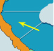
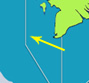

Dự Báo Thời Tiết Biển 24h
Bắc Vịnh Bắc Bộ
Có mưa vài nơi, sáng có sương mù và sương mù nhẹ.
Tầm nhìn xa : Trên 10km, giảm xuống dưới 1km trong sương mù.
Gió đông đến đông nam cấp 4. Sóng cao 1,0 - 2,0m.

Nam Vịnh Bắc Bộ
Có mưa vài nơi, sáng có sương mù và sương mù nhẹ rải rác.
Tầm nhìn xa : Trên 10km, giảm xuống dưới 1km trong sương mù.
Gió đông đến đông nam cấp 4. Sóng cao 1,0 - 2,0m.
Quảng Trị-Quảng Ngãi
Có mưa vài nơi.
Tầm nhìn xa : Trên 10km.
Gió đông đến đông nam cấp 3-4. Sóng cao 1,0 - 2,0m.
Bình Định-Ninh Thuận
Không mưa.
Tầm nhìn xa : Trên 10km.
Gió đông đến đông bắc cấp 3-4. Sóng cao 0,5 - 1,5m.
Bình Thuận-Cà Mau
Không mưa.
Tầm nhìn xa : Trên 10km.
Gió đông bắc cấp 4-5. Sóng cao 1,0 - 2,0m.

Cà Mau-Kiên Giang
Không mưa.
Tầm nhìn xa : Trên 10km.
Gió đông đến đông nam cấp 3-4. Sóng cao 0,5 - 1,5m.
Bắc Biển Đông
Có mưa vài nơi.
Tầm nhìn xa : Trên 10km.
Gió đông đến đông nam cấp 3-4. Sóng cao 1,5 - 2,5m.
Quần Đảo Hoàng Sa
Không Mưa.
Tầm nhìn xa : Trên 10km.
Gió đông đến đông nam cấp 3-4. Sóng cao 0,5 - 1,5m.
Vùng Giữa Biển Đông
Không mưa.
Tầm nhìn xa : Trên 10km.
Gió đông bắc cấp 4-5. Sóng cao 1,0 - 2,0m.
Quần Đảo Trường Sa
Không mưa.
Tầm nhìn xa : Trên 10km.
Gió đông bắc cấp 4-5. Sóng cao 1,0 - 2,0m.
Vinh Thái Lan
Không mưa.
Tầm nhìn xa : Trên 10km.
Gió nhẹ. Sóng cao 1,0 - 2,0m.